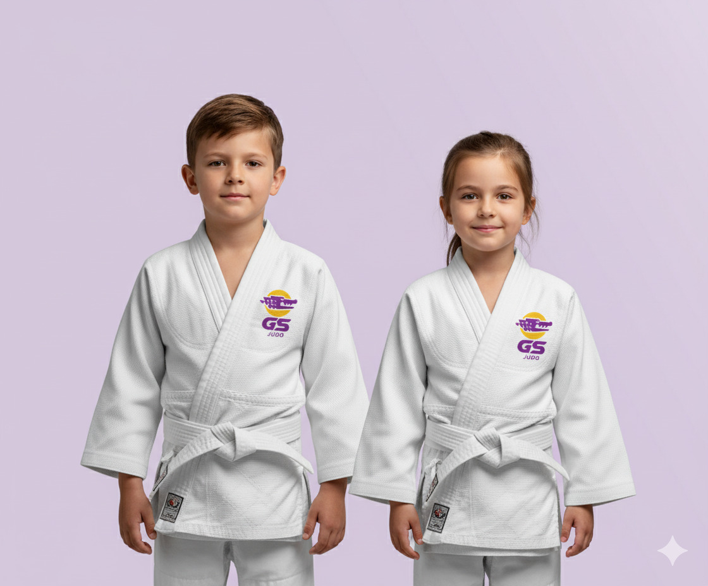
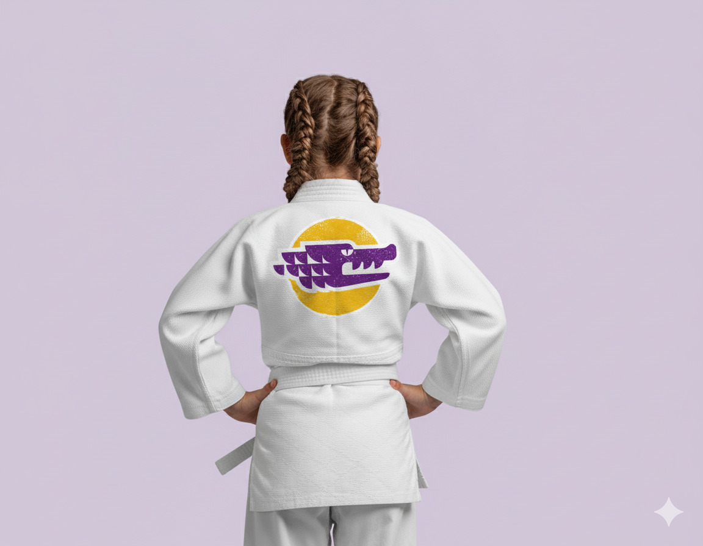
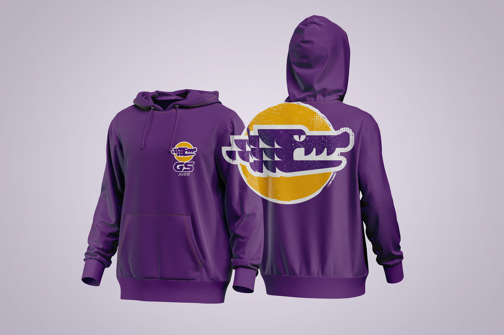
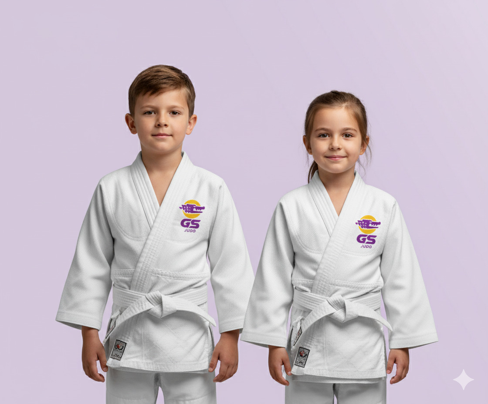
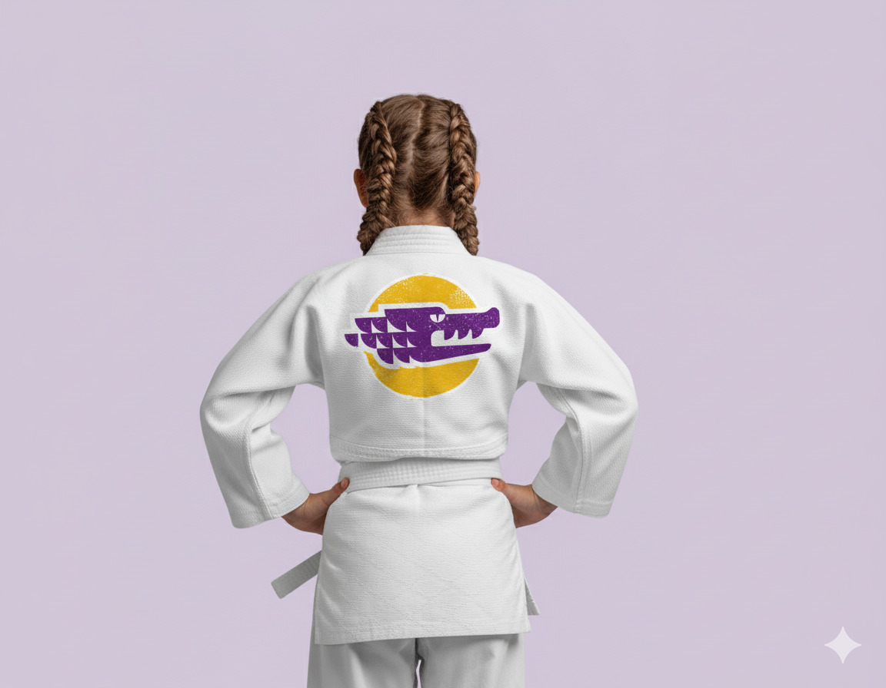
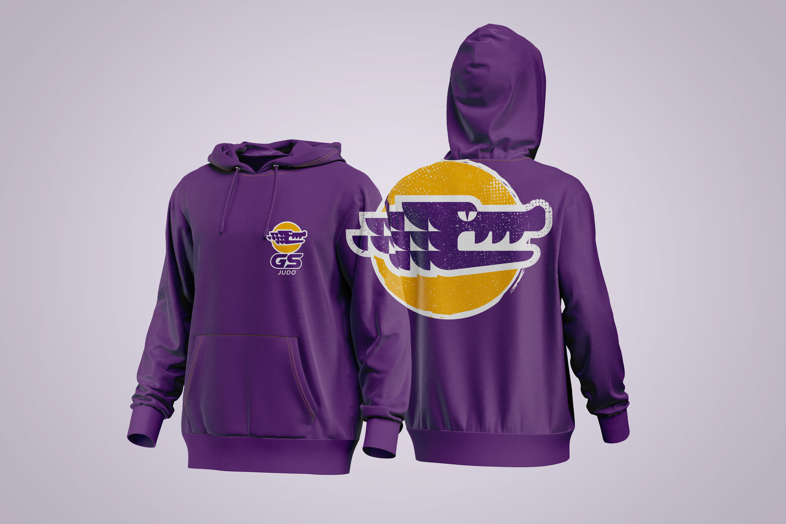

Gabriel Soares Sensei
O logo desenvolvido para Gabriel Soares Sensei transmite força, disciplina e respeito, refletindo a essência do judô e a personalidade única do sensei. A paleta de cores foi escolhida para equilibrar tradição e acessibilidade, com uma inspiração especial na sua paixão pelos Lakers, criando uma identidade visual autêntica e memorável. O design comunica a essência de Gabriel Soares como líder e mentor no judô, alinhando sua trajetória esportiva com seu gosto pessoal.
 




